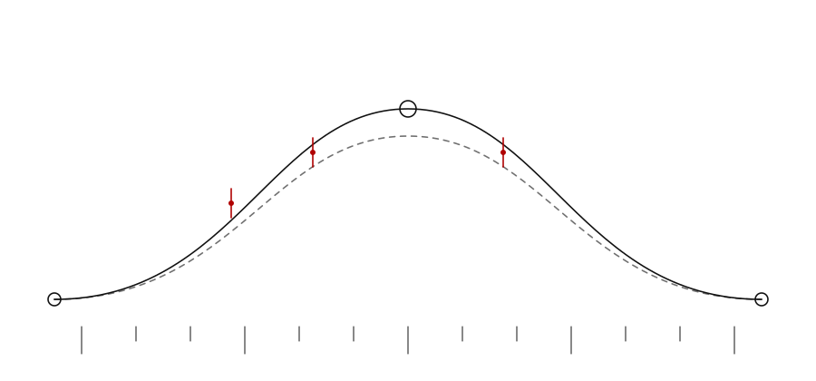

PLATE C · 03 / 12
THE RITUAL
Days three, nine, forty
The most confidently repeated ‘Russian funeral custom’ is also the one most often misdescribed: the commemoration on the third, ninth and fortieth day is a liturgical scheme before it is a folk one.
Liturgical sources 17th–19th c.; practice recorded 19th–21st c. · Russia; Orthodox parishes · Orthodox Christianity; folk elaboration

C / 01
The shape of the forty days
The commemoration of the dead on the third, ninth and fortieth day after death is set out in Orthodox liturgical handbooks, and the reasons given there are theological rather than calendrical. In the nineteenth-century handbook Novaia Skrizhal’, the third day is tied to the Resurrection, the ninth to the nine ranks of angels, and the fortieth to the Ascension, which took place on the fortieth day.
The same handbook is explicit that the prayers are for the forgiveness of sins and the placing of the soul ‘with the saints’. The popular explanations that accompany the scheme — that the soul visits the house for three days, that it is examined on the ninth, that it finally departs on the fortieth — belong to a different register. They are widespread, they are recorded, and they are not the doctrine.

| Moment | Documented in liturgical sources | Folk elaboration (interpretation) | Confidence |
|---|---|---|---|
| Third day | Commemoration; linked to the Resurrection | The soul lingers near the house | high / low |
| Ninth day | Commemoration; linked to the angelic ranks | The soul is shown the places of the blessed | high / low |
| Fortieth day | Commemoration; linked to the Ascension | The soul departs; the ‘final’ farewell | high / low |
| Anniversary | Annual commemoration (godoviny) | The dead is counted as an ancestor | high / low |
| Radonitsa | A fixed day of parish commemoration in spring | Meal at the grave; greeting the dead | medium / low |

C / 02
Against the survival story
Nineteenth- and early twentieth-century scholarship often read Russian funerary practice as a survival of pre-Christian religion, with the Church imposed on top. Later work on ritual has been more cautious. A. K. Baiburin’s study of ritual in traditional culture treats ritual as a system of signs with its own internal logic rather than as a fossil of an earlier belief; the question of what a rite ‘originally meant’ is usually unanswerable from the evidence that survives.
This atlas therefore marks origin claims as interpretations. The forty-day cycle is documented as Christian. Whether some households also understood it as an older calendar is a question the sources used here cannot settle.
C / 03
Who does the work
The ritual has an economy of roles. The priest serves; a reader may read the psalter; women lament; neighbours cook and carry. The laments (see plate G) are performed by women who are often, but not always, kin, and their performance is judged — for voice, for fullness, for the ability to make the room weep.
The distribution of labour is itself historical. In the Soviet period the priest’s role contracted and the household’s expanded; after 1991 it contracted back again in some places and not in others.

Apparatus sources · related plates · terms
Sources for this plate
- skrizhal Veniamin (Krasnopevkov-Rumovskii), Archbishop — Novaia Skrizhal’ (1803 (text consulted in a modern online edition))
- baiburin1993 Baiburin, Albert Kashfullovich — Ritual v traditsionnoi kul’ture (1993)
- shevzov2003 Shevzov, Vera — Russian Orthodoxy on the Eve of Revolution (2003)
- barsov1872 Barsov, Elpidifor Vasil’evich — Prichitaniia Severnogo kraia (1872–1886)
URLs, access dates and limitations are in the bibliography.